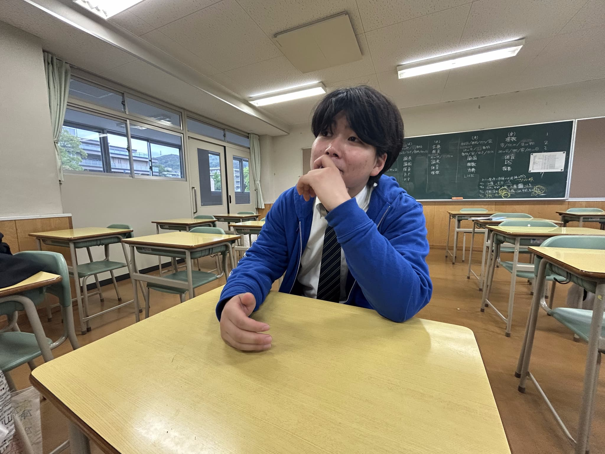

―― 実行委員長になったきっかけを教えてください。
きっかけは第10回の兎原祭。その時の実行委員長に一目惚れしたんだよね。一緒に写真を撮ってもらったりして、本当にかっこいい人だった。それを見た瞬間、「これが俺のスクールライフだ」って確信したんだ。
―― 委員長として大切にしていることは？
一つ一つに対しての「誠実さ」かな。信頼できるメンバーに仕事を託す。そこでの誠実さを何より大事にしているよ。運営メンバーの雰囲気？ ――最高だね。最高のメンバーだからこそ、いいものが作れるんだ。

―― 今年のテーマへの想いと、魅力について。
常時みんなが各々アクセルを踏んで全速力で進んでるからね。これはもう誰にも止められないよ。
魅力は何より「お友達招待券」だな。色々な友達も呼ぶことができて、これまでにない楽しさがあるはずさ。
―― 来場者には何をどう楽しんでもらいたいですか？
圧倒的パフォーマンス。バンドやダンスなどの出し物一つ一つじゃない。兎原祭という大きな一つの「作品」を楽しんでくれ。
ポイントは「ハイ」になること！（頭に人差し指をあてながら）ユニバとかと同じで、普通のテンションじゃなく馬鹿なテンションで遊ぶ。それが思いっきり楽しむ秘訣だね。
―― 富田さんにとって、兎原祭とは？
「家族」だね。父のような偉大さも、母のような優しさも、兄のような勇気や妹のような愛くるしさだってある。まさに僕にとっての家族だよ。
この文化祭はいずれ竜になって空に昇り詰めるぜ。みんなが落ちると思っている紙飛行機じゃなく、俺は大空に兎原祭という竜を放ったんだ。
―― 来場者に一言。
刮目せよ！一大イベント・兎原祭！